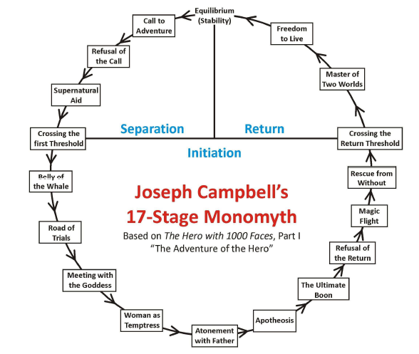

"From the beginning, I could never drop the idea that it should really be a love story."
—Andrew Stanton.
Summary
WALL-E is set in the far future where humans have left Earth on a giant ship called the Axiom because of all the garbage pile-up.
The only known inhabits now are an adorable robot named WALL•E, who must keep up the mess and his cockroach friend Hal.
However, all that changes when WALL-E meets a robot named EVE and falls in love with her. Soon the two robots are heading into space and onto the Axiom on a mission that could bring humankind back to Earth.*
On this website, there will be information about Wall-E's monomyth structure. We tried to explain the movie Wall-E according to Joseph Campbell's monomyth structure.
